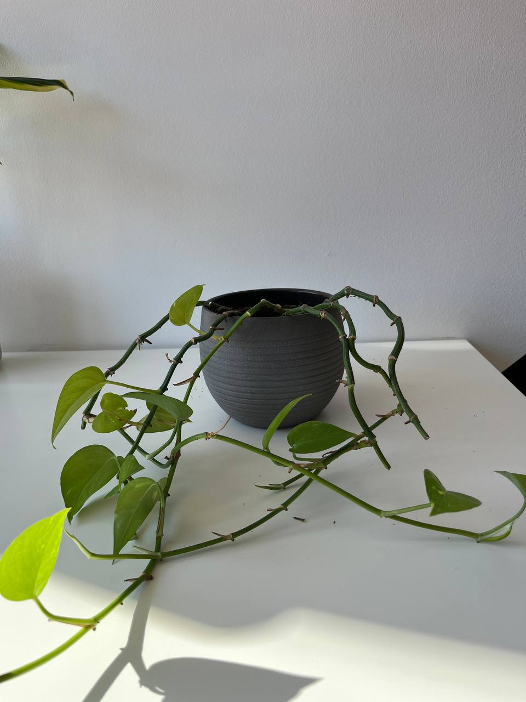

Activity
- Scheduled
- Feed 03-09-2024
Golden Pothos Plant Care Guide
Environment
Light
- Indirect Sunlight: Golden Pothos thrives in bright, indirect light but can tolerate low light conditions. Avoid direct sunlight, which can burn the leaves.
Soil
- Well-Draining Soil: Use a well-draining potting mix. A standard houseplant potting soil works well, or you can add perlite or sand to improve drainage.
Temperature
- Moderate Temperatures: Golden Pothos thrives in temperatures between 65-85°F (18-29°C). Avoid temperatures below 50°F (10°C).
Routine jobs
Watering
- Watering Schedule: Water the plant when the top inch of soil feels dry. Pothos prefers to dry out between waterings. Overwatering can lead to root rot.
- Humidity: Average room humidity is fine, but Pothos will appreciate higher humidity. Mist the plant occasionally if the air is very dry.
Feeding
- Fertilization: Feed monthly during the growing season (spring and summer) with a balanced liquid fertilizer. Reduce feeding in the fall and winter.
Potting
- Container Choice: Choose a pot with drainage holes to prevent waterlogging. Pothos can tolerate being root-bound but will benefit from repotting every couple of years.
- Repotting: Repot when the plant outgrows its container or the soil becomes compacted. Use fresh potting mix when repotting.
Troubleshoot
- Common Pests: Watch for common houseplant pests such as spider mites, mealybugs, and aphids. Treat infestations promptly with insecticidal soap or neem oil.
- Leaf Care: Remove any yellow or damaged leaves to keep the plant healthy and attractive.
Pruning
- Trimming: Regularly trim back leggy vines to encourage bushier growth. You can also propagate the cuttings in water to start new plants.